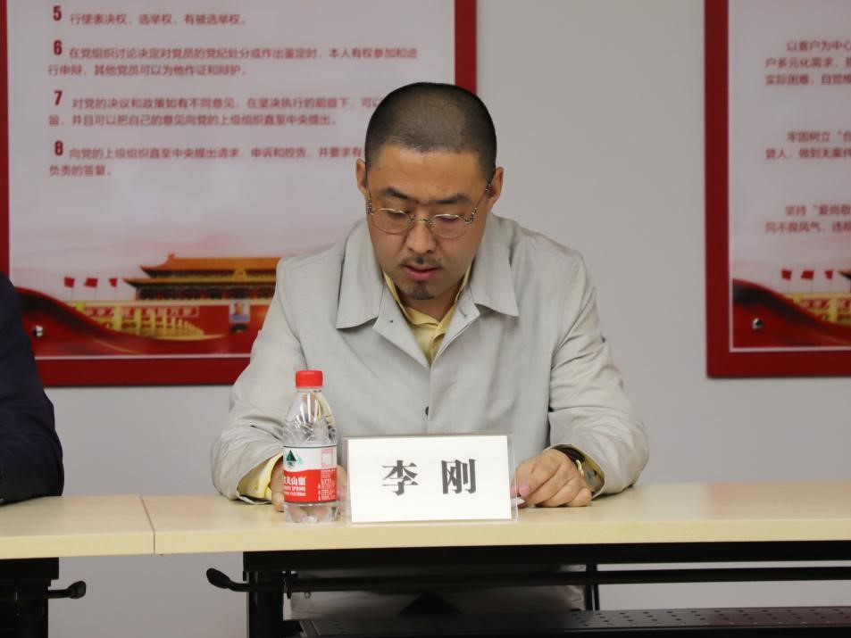

2017年10月，十九大代表、陕西省委常委、西安市委书记王永康围绕西安如何学习、宣传、贯彻、落实党的十九大精神做了发言，提出西安要加快调整创新发展方式，着力打造硬科技之都。而对于民营经济发展，永康书记则特别指出，民营经济是市场经济中最具活力和创造力的“细胞”，是推动地方经济社会发展的“主力军”。民营经济的发展壮大，将为西安创造更强大的发展动能，加速追赶超越步伐。大西安需要更多优秀民营企业家前来助力，需要民营经济的大发展。为响应“民营经济倍增计划”、“营商环境提升年”和“聚焦三六九，振兴大西安”的精神，发展硬科技、推动大数据，打造智慧城市，提供便民服务，推动民营企业党建工程，助力民营企业发展。
陕西万盛达信息科技有限公司党支部成立大会现场
2018年5月9日上午，陕西万盛达信息科技有限公司召开党支部成立大会。当日，碑林区委组织部副部长、区非公党建工委书记王宗会，南院门街道党工委书记杜国荣，南院门街道党工委副书记张鹏，陕西万盛达信息科技有限公司董事长李刚莅临现场并发表讲话。南院门街道党办、党建办工作人员及陕西万盛达信息科技有限公司业务主干参加大会。
碑林区委组织部副部长、区非公党建工委书记王宗会发言
会上，碑林区委组织部副部长、区非公党建工委书记王宗会对陕西万盛达信息科技有限公司党支部的成立表示祝贺，他充分肯定了公司在智慧城市建设工作中所做出的突出贡献，同时对互联网企业开展党建工作的方式方法提出四点意见：
一是要围绕一个目标。公司党支部要按照“目标同向，作用互补，共同发展”的工作思路，把做大做强企业作为全部工作的出发点和落脚点，以增强党组织服务经营发展和团结凝聚职工群众为重点，积极开展各种扎实有效的工作和活动，促进企业发展壮大。同时，公司也应为党支部开展工作提供必要的人力、物力支持，为党支部正常履行职能创造有利条件。
二是要发挥两个作用。公司党支部要把工作的目标任务放在促进公司的发展壮大上；把工作的重点放在沟通政企关系、协调劳资关系、密切党群关系上；把工作切入点放在为职工做好事、办实事、解难事上；把工作着力点放在党员的学习、教育、培训、管理和服务上。党员要努力实现“一岗双责”，实现“三有三无”。
三是要把握三个原则。公司党支部在工作内容上要坚持“为企业所需要，为党员所欢迎，为员工所拥护，为出资人所理解和支持”的原则；在工作方式上要坚持“业余、小型、分散、务实”的原则；在工作方法上要坚持“参与不干预、支持不拆台、引导不强制、监督不迁就”的原则，使党支部在企业中树立形象，有为有位。
四是要做好四项工作。公司党支部在今后的工作中，第一要加强理论学习，第二要落实党内制度，第三要开展载体活动，第四要履行社会义务，推动各项工作不断取得新的成绩。

陕西万盛达信息科技有限公司董事长李刚发言
陕西万盛达信息科技有限公司董事长李刚表示，民营企业既要基于政策方针的绝佳契机，更要通过政企联合，以政策为导向，以市场为主体，以硬科技为桥梁，以为民服务为宗旨，着力发展大西安的新经济新常态。此次我们民营企业成立党支部，并被授章授牌，不仅开拓了我们民营企业的党政文化建设，更将党的方针政策落到实处，深入企业，也是政企融合推进大西安繁荣发展的重要支点。另外，他认为，改善西安交通环境、改变交通信息服务方式，带动社会交通及信息交互的智能化发展是助力西安打造智慧城市的核心要素。陕西万盛达正是通过科技改变西安市民的出行生活，通过一张卡、一部手机就能实现交通信息互联，这将为西安信息交通、智慧交通发展带来新的进步。